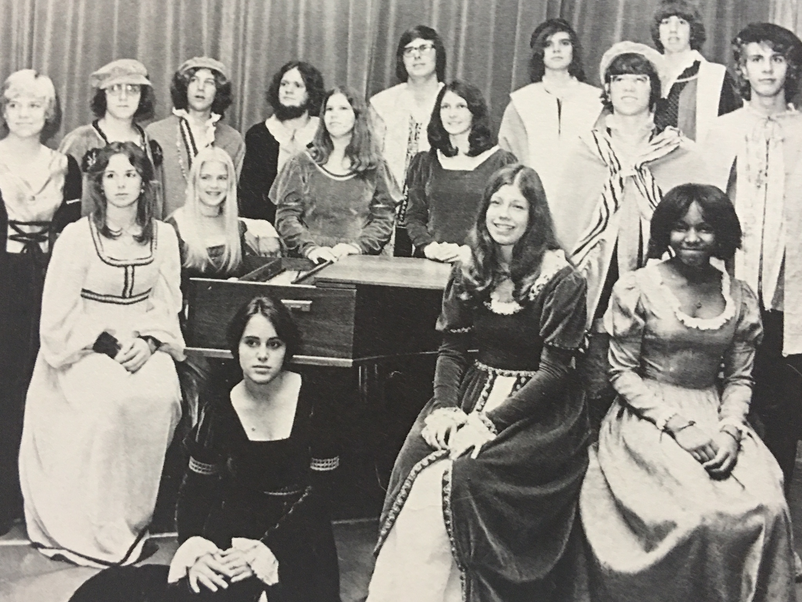

Family Music
Everyone in my family is musical except for my father. A pastor, he had the good sense to step back from the pulpit microphone during hymns. At most, he sang softly when he wore his lavaliere. My mother, on the other hand, sang and occasionally soloed in our churches' choirs and still plays piano.
By the time I was old enough to be aware of the talents of my siblings, Lisa was already accomplished in her piano playing and was dressing in period velour costumes to sing in Larkin High School's madrigals choir. Soon thereafter, Todd was receiving attention for his natural ear and his facility with the guitar despite the finger-shredding action of his first one, an Epiphone acoustic; he would later major briefly in jazz in college and play in his university's jazz band.
Beyond our immediate household, nearly every story I heard from my maternal grandmother involved the embarrassment of musical riches that was the Hitchcock brood, riches quickly demonstrated at the summertime family reunions near Myrtle Beach when, during the evenings, everyone would sing old favorites for grandma. As a child, not knowing the songs' words, I just sat there running my hands across the sandy pinewood floors.
Surrounded by so much music from the beginning, how was I to compete? Being the youngest and a retiring child, I gave up before I even tried to join the rest of my family on the musical stage.
Still, I fantasized about creating music, but it wasn't until I was out of my parents' home and in college that I was able to come to music on my own terms and find the incentive and patience to take up an instrument myself. The bass seemed a natural enough choice: I had been listening to Geddy Lee and Chris Squire; in my mind, bass was more associated with rock and roll than the piano; it had two fewer strings than the guitar (and would, I told myself, be easier to learn); guitar playing is too showy for my personality anyway, and since Todd already played guitar, it would give us something to do together as friends.